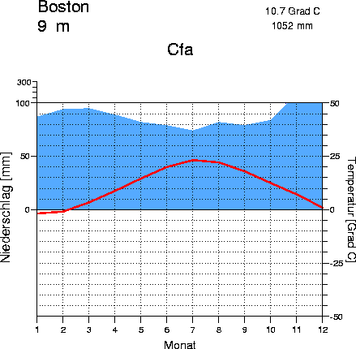
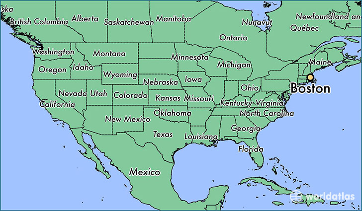
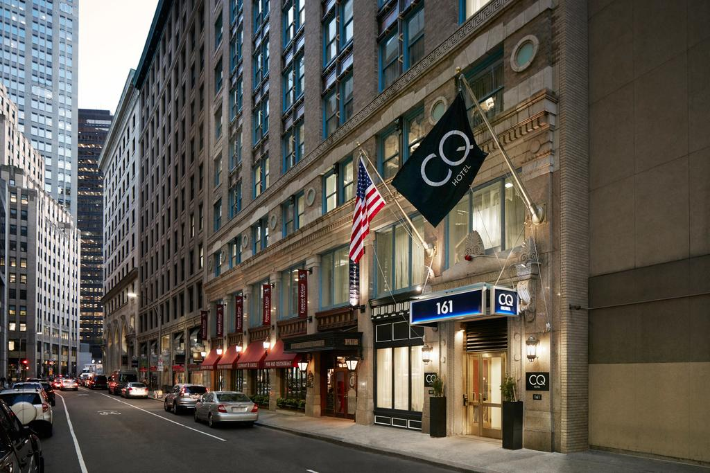
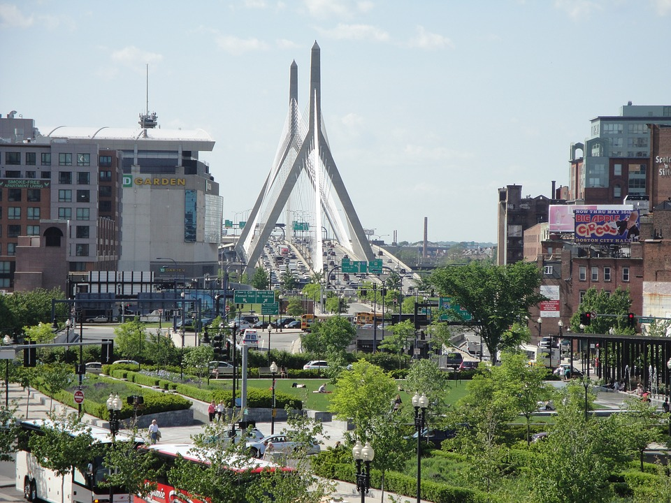

Wereldreis Klimaatgebeiden
(Aardrijkskunde PO)
Landklimaat
Voor het eerste deel van onze wereldreis gaan we naar Boston, Massachusets, Verenigde Staten.
Klimaat & Klimaatgrafiek
Hier in Boston hebben ze een warme landklimaat, dus in de zomer is het meestal warm, en
in de winter is het best wel koud.

Een Klimaat grafiek van Boston
Ligging
Boston ligt in Massachusets, een van de 50 Amerikaanse staten. Het duurt ongeveer 8uur om met de vliegtuig naar Boston te gaan vanaf Amsterdam.

Accomodatie
Club Quarters Hotel
De Club Quarters Hotel ligt in rond het centrum van Boston, Dicht bij het strand. Het is een 4 sterrenhotel met Wifi en een Restaurant.

Vegetatie
In Boston groeien er redelijk veel planten, omdat Boston, net zoals Londen, ziet te warm, maar ook niet te koud is. Er groeien meestal in de lente planten/bomen
